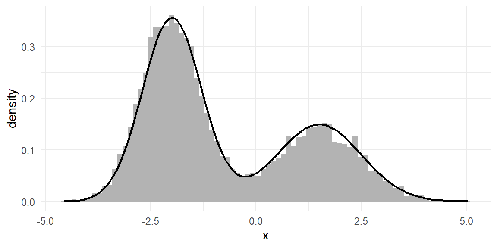
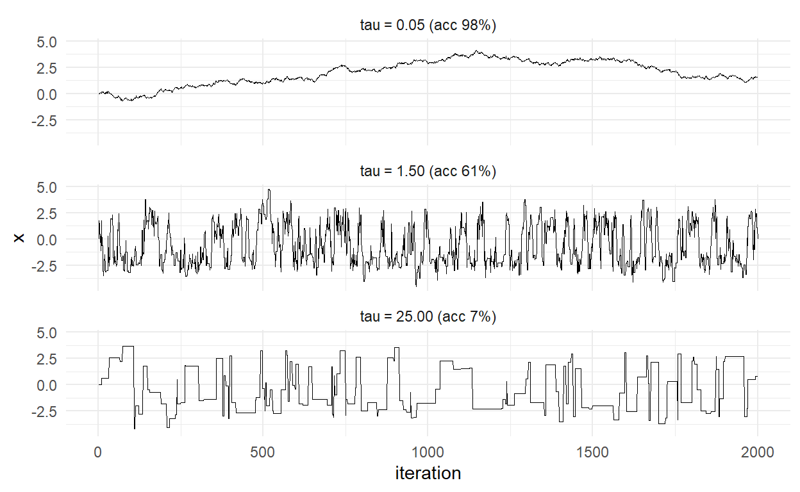
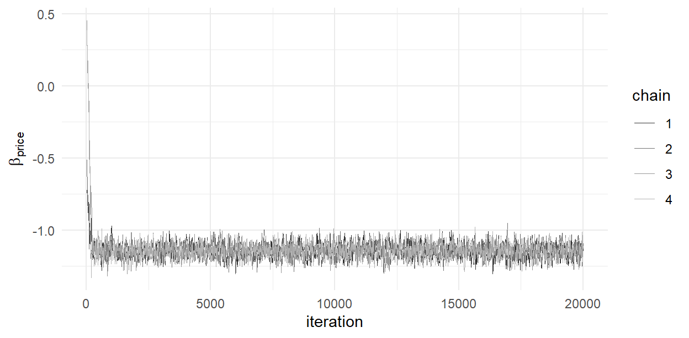

log_prior <- function(beta, sd = 5) sum(dnorm(beta, 0, sd, log = TRUE))
log_post <- function(beta, y, X, task_id)
loglik_mnl(beta, y, X, task_id) + log_prior(beta)15 Bayesian Estimation of the MNL
Part III begins with a promise made in Chapter 14: build the estimator out of Bayes’ rule, and the person-level inference problem dissolves. Keeping that promise takes three chapters. This one changes the philosophical engine while keeping the model deliberately familiar — the plain MNL on the same laptop study we estimated by maximum likelihood in Chapter 8 — so that everything new is method, nothing is model. By the end you will have sampled a posterior with an algorithm you coded yourself, diagnosed its health, and discovered that it reproduces Chapter 8’s answers almost exactly. That near-redundancy is the point: on a model this simple, Bayes buys little. The machine we assemble here, though, is precisely the machine that scales to the hierarchical models where Bayes buys everything — and its hot inner loop is, literally, the loglik_mnl() function you already own.
15.1 The Bayesian Mindset
The likelihood tradition of Part II treats \(\boldsymbol{\beta}\) as a fixed unknown constant and asks: which value makes the data most probable? Uncertainty lives in the data — the sampling distribution of \(\hat{\boldsymbol{\beta}}\) across hypothetical replications (Section 8.8 ran them) — and is reported as standard errors.
The Bayesian tradition treats \(\boldsymbol{\beta}\) itself as an uncertain quantity and asks a different question: given what we observed, what should we believe about \(\boldsymbol{\beta}\)? Beliefs before the data are the prior \(p(\boldsymbol{\beta})\); the data speak through the likelihood \(p(\mathbf{y}\mid \boldsymbol{\beta})\) — the identical object we built in Chapter 5, no modification — and Bayes’ rule combines them into the posterior:
\[ p(\boldsymbol{\beta}\mid \mathbf{y}) = \frac{ p(\mathbf{y}\mid \boldsymbol{\beta}) \, p(\boldsymbol{\beta}) }{ p(\mathbf{y}) } \;\propto\; p(\mathbf{y}\mid \boldsymbol{\beta}) \, p(\boldsymbol{\beta}) \tag{15.1}\]
The denominator \(p(\mathbf{y}) = \int p(\mathbf{y}|\boldsymbol{\beta})p(\boldsymbol{\beta})d\boldsymbol{\beta}\) — the marginal likelihood — is a constant with respect to \(\boldsymbol{\beta}\): it rescales the posterior to integrate to one but does not change its shape. Hold onto that observation; it is about to carry the whole chapter.
You have already met this arithmetic twice without the label. The E-step of Chapter 11 (Equation 11.3) was Bayes’ rule over discrete classes; the conditional distribution of Chapter 14 (Equation 14.1) was Bayes’ rule over a person’s coefficients with the population as prior. Both times, the rule was a bolt-on to a likelihood-estimated model. The move now is to apply it to everything we don’t know — in this chapter just \(\boldsymbol{\beta}\); by Chapter 17, every person’s \(\boldsymbol{\beta}_n\) and the population parameters above them, in one coherent joint posterior.
The output format changes too, and the change is an upgrade. Maximum likelihood reports a point and a curvature-based wobble (Equation 5.10). The posterior is an entire distribution: its mean is a point estimate, its standard deviation an uncertainty, its quantiles honest interval statements (“with probability 0.95, \(\beta_{\text{price}}\) lies in…”), and — crucially for Chapter 21 — any function of parameters inherits a full distribution by pushing draws through it. No delta method, no asymptotic appeal; finite-sample statements, exact up to sampling of the posterior itself.
15.2 Priors
The prior is the ingredient likelihood analysis doesn’t have, and it deserves a plain-spoken paragraph rather than an ideological one. A prior encodes what is credible about parameters before the current data — from previous studies, theory, or mere scale knowledge (“utility coefficients of magnitude 100 do not occur in conjoint data”). When data are rich, as ours are (4,000 choices bearing on six parameters), any reasonable prior is overwhelmed by the likelihood and the posterior barely notices it; when data are thin — individual-level parameters from eight tasks, the exact situation of Chapter 17 — the prior matters enormously and usefully, supplying the regularization that made Chapter 14’s conditional means sane where per-person MLE exploded.
For this chapter: independent normals, generous scale,
\[ \beta_k \sim N(0, 5^2), \quad k = 1, \ldots, K \tag{15.2}\]
— “weakly informative” in the standard sense (Gelman et al. 2020): no direction favored, magnitudes beyond \(\pm 10\) gently discouraged, everything our simulate-and-recover truths could plausibly be, easily accommodated. The honest practice is not agonizing over the perfect prior but checking sensitivity: refit with the scale at 2 and at 20 and confirm nothing you report moves. (With this chapter’s data, nothing does; we verify at the end.)
In code, the prior joins the likelihood on the log scale — and note that the sum below is the entire Bayesian addition to Part II’s machinery:
15.3 The Posterior Has No Closed Form Either
For a handful of textbook pairings (normal likelihood, normal prior — Chapter 16 exploits them), the posterior is a named distribution you can look up. The MNL is not one of them: multiply Equation 8.1’s exponentiated form by a normal prior and the result matches no catalog. Concretely, we can evaluate the posterior’s shape — Equation 15.1’s numerator, our log_post() — at any \(\boldsymbol{\beta}\) we like, but we cannot integrate it: no normalizing constant, no posterior means, no quantiles, nothing summable in closed form.
This should feel familiar. It is Chapter 12’s predicament — a needed integral with no formula — met this time not by approximating the integral but by a more radical maneuver: never compute it at all. If we can manufacture draws from the posterior, then every summary we want is a sample statistic: posterior mean \(\approx\) mean of draws, quantiles \(\approx\) sample quantiles, exactly the Chapter 2 logic of summarizing distributions by sampling them. The entire Bayesian computation problem reduces to: sample from a distribution known only up to a constant. Enter the second-most-cited algorithm of twentieth-century science.
15.4 The Metropolis–Hastings Algorithm
The idea. Take a random walk through parameter space, but a biased one: propose a small random move; if the move goes uphill on the posterior surface, take it; if downhill, take it sometimes — with probability equal to the ratio of posterior heights. Formally, from current position \(\boldsymbol{\beta}^{(s)}\):
- Propose \(\boldsymbol{\beta}' = \boldsymbol{\beta}^{(s)} + \text{step}\), with the step drawn symmetrically (ours: \(N(\mathbf{0}, \tau^2 I)\)).
- Compute the acceptance probability \[ \alpha = \min\left(1, \; \frac{p(\boldsymbol{\beta}' \mid \mathbf{y})}{p(\boldsymbol{\beta}^{(s)} \mid \mathbf{y})} \right) \tag{15.3}\]
- With probability \(\alpha\) set \(\boldsymbol{\beta}^{(s+1)} = \boldsymbol{\beta}'\) (accept); otherwise \(\boldsymbol{\beta}^{(s+1)} = \boldsymbol{\beta}^{(s)}\) (stay — the repeat is part of the sample).
A naming note that pays off next chapter: Equation 15.3 is really the Metropolis ratio, valid only because our proposal is symmetric — a step from \(\boldsymbol{\beta}^{(s)}\) to \(\boldsymbol{\beta}'\) is exactly as probable as the reverse step. Hastings’ generalization handles an asymmetric proposal density \(q\) by reweighting: \[\alpha = \min\left(1, \; \frac{p(\boldsymbol{\beta}' \mid \mathbf{y})\; q(\boldsymbol{\beta}^{(s)} \mid \boldsymbol{\beta}')}{p(\boldsymbol{\beta}^{(s)} \mid \mathbf{y})\; q(\boldsymbol{\beta}' \mid \boldsymbol{\beta}^{(s)})} \right)\] With symmetric \(q\) the correction cancels and we recover Equation 15.3. We will need the general form exactly once — in Chapter 16, to see why a Gibbs draw is an M-H step that never rejects.
Two observations make the algorithm sing. First, the ratio in Equation 15.3 involves the posterior at two points — so the unknowable normalizing constant cancels: the algorithm needs only our computable log_post(), up-to-a-constant being exactly enough. Second, computed on the log scale (as a difference, accepted when \(\log u < \Delta\)) it is immune to the underflow that raw probability ratios invite — Chapter 9’s stay-on-the-log-scale doctrine, now load-bearing.
Why does the wandering produce posterior draws? The one-paragraph honest answer: the accept/reject rule is engineered so that posterior-density flow between any two locations balances — from where the posterior is high, many walkers depart, but proportionally many are sent back — in symbols, detailed balance requires \(p(\boldsymbol{\beta}\mid \mathbf{y})\, q(\boldsymbol{\beta}' \mid \boldsymbol{\beta})\, \alpha(\boldsymbol{\beta}\to \boldsymbol{\beta}') = p(\boldsymbol{\beta}' \mid \mathbf{y})\, q(\boldsymbol{\beta}\mid \boldsymbol{\beta}')\, \alpha(\boldsymbol{\beta}' \to \boldsymbol{\beta})\), and Equation 15.3 satisfies it by construction: whichever direction is “downhill” accepts with probability equal to the posterior ratio, which is precisely the factor that equalizes the two sides (plug in \(\alpha\) for the case \(p(\boldsymbol{\beta}' \mid \mathbf{y}) < p(\boldsymbol{\beta}\mid \mathbf{y})\) and check) — making the posterior the walk’s stationary distribution: once the chain forgets its starting point, each step is a (serially correlated) draw from the posterior. The full argument is detailed balance plus Markov chain convergence theory (Train 2009, Ch. 12 sketches it; Gelman et al. 2013 gives it properly); we will do what computational people do and verify stationarity empirically, on a target we know.
A toy target first. Before trusting the algorithm with a posterior we cannot check, aim it at a density we can — the Section 3.5 discipline applied to samplers. A deliberately awkward target: a bimodal mixture of normals, known only up to a constant (we “forget” the constant on purpose):
log_target <- function(x) log(dnorm(x, -2, 0.7) + 0.6 * dnorm(x, 1.5, 1))
mh_1d <- function(log_f, x0, tau, S) {
x <- numeric(S); x[1] <- x0
acc <- 0
for (s in 2:S) {
prop <- x[s-1] + rnorm(1, 0, tau)
if (log(runif(1)) < log_f(prop) - log_f(x[s-1])) {
x[s] <- prop; acc <- acc + 1
} else x[s] <- x[s-1]
}
list(draws = x, acc_rate = acc / (S - 1))
}
set.seed(150)
chain <- mh_1d(log_target, x0 = 0, tau = 1.5, S = 20000)
chain$acc_rate[1] 0.6104305norm_const <- integrate(function(x) exp(log_target(x)), -8, 8)$value
ggplot(data.frame(x = chain$draws[-(1:500)]), aes(x)) +
geom_histogram(aes(y = after_stat(density)), bins = 80, fill = "grey70") +
geom_function(fun = function(x) exp(log_target(x)) / norm_const,
linewidth = 0.8) +
labs(x = "x", y = "density")
The histogram is the target. Twenty lines of code, no constants, no formulas for means or modes — just evaluations of an unnormalized density and coin flips.
The step size is a real decision. The proposal scale \(\tau\) trades off two failure modes, best seen than described — the same chain with \(\tau\) far too small, well-chosen, and far too large:
set.seed(151)
taus <- c(0.05, 1.5, 25)
traces <- do.call(rbind, lapply(taus, function(tt) {
ch <- mh_1d(log_target, 0, tt, 2000)
data.frame(iter = 1:2000, x = ch$draws,
tau = sprintf("tau = %.2f (acc %.0f%%)", tt, 100 * ch$acc_rate))
}))
ggplot(traces, aes(iter, x)) +
geom_line(linewidth = 0.25) +
facet_wrap(~ tau, ncol = 1) +
labs(x = "iteration", y = "x")
Small steps accept almost everything but move nowhere — the chain is a slug, and its draws are so correlated they carry almost no information each. Huge steps propose leaps into the improbable, get rejected, and the chain fossilizes. Between them lies a broad sweet spot, conventionally targeted through the acceptance rate: theory for random-walk proposals puts the optimum near 23% in high dimensions and ~44% in one dimension [the folklore range 20–40% serves fine; Train (2009), Section 12.5]. Tuning \(\tau\) to hit that range — by hand now, adaptively in Chapter 17 — is the algorithm’s one knob.
15.5 M-H for the MNL
Now the real target. Load the laptop study (same data as Chapter 8 — comparability is the experiment), bring back the likelihood kernel, and point the sampler at the posterior — note the multivariate generalization is only that proposals perturb all six coordinates at once:
study <- readRDS("../data/laptop_study.rds")
laptops <- study$data
X <- model.matrix(~ brand + ram + screen + price, data = laptops)[, -1]
y <- laptops$choice
task_id <- cumsum(!duplicated(laptops[, c("id", "task")]))
K <- ncol(X)
loglik_mnl <- function(beta, y, X, task_id) { # @sec-mnl-mle, verbatim
V <- as.vector(X %*% beta)
Vmax <- ave(V, task_id, FUN = max)
eV <- exp(V - Vmax)
sum((V - Vmax - log(rowsum(eV, task_id)[task_id]))[y == 1])
}
mh_mnl <- function(y, X, task_id, S, tau, beta0 = rep(0, ncol(X)),
prior_sd = 5) {
K <- ncol(X)
draws <- matrix(NA_real_, S, K) # preallocate (@sec-performance)
beta <- beta0
lp <- loglik_mnl(beta, y, X, task_id) +
sum(dnorm(beta, 0, prior_sd, log = TRUE))
acc <- 0
for (s in 1:S) {
prop <- beta + rnorm(K, 0, tau)
lp_prop <- loglik_mnl(prop, y, X, task_id) +
sum(dnorm(prop, 0, prior_sd, log = TRUE))
if (log(runif(1)) < lp_prop - lp) {
beta <- prop; lp <- lp_prop; acc <- acc + 1
}
draws[s, ] <- beta
}
list(draws = draws, acc_rate = acc / S)
}Study the inner loop and count what is new relative to Part II: the proposal line, the prior line, the comparison line. Everything else — the entire cost of each iteration — is one call to loglik_mnl(). The function we wrote in Chapter 8, vectorized in Chapter 9, and audited in Chapter 13 is the engine of the Bayesian machine too; Table 9.1’s MCMC row is now literal.
Tune briefly (a few short pilot runs, not shown, put \(\tau = 0.045\) in the low-20s acceptance range for these data — six dimensions, so we aim low per the theory) and run four chains from dispersed starts, because multiple chains are about to be a diagnostic:
set.seed(152)
S <- 20000
chains <- lapply(1:4, function(c)
mh_mnl(y, X, task_id, S = S, tau = 0.045,
beta0 = rnorm(K, 0, 1)))
sapply(chains, `[[`, "acc_rate")[1] 0.27250 0.26815 0.26800 0.2733015.6 Reading a Chain: Diagnostics
An MCMC run hands you numbers unconditionally; whether they are posterior draws is a judgment the diagnostics inform. The workflow, on our chains:
Trace plots first, always. The chain’s path over iterations, for one parameter, all four chains:
tr <- do.call(rbind, lapply(1:4, function(c)
data.frame(iter = 1:S, chain = factor(c),
price = chains[[c]]$draws[, 6])))
ggplot(tr[tr$iter %% 10 == 0, ], aes(iter, price, color = chain)) +
geom_line(linewidth = 0.2) +
scale_color_grey(end = 0.7) +
labs(x = "iteration", y = expression(beta[price]))
The reading: an initial transient as each chain walks in from its arbitrary start — that stretch reflects the starting point, not the posterior, and is discarded as burn-in (we drop 2,000, generous for this well-behaved problem) — followed by stable, overlapping fuzz. Four chains agreeing about where to fuzz is the point of dispersed starts: any one chain can look settled while stuck; four independent walkers telling the same story is far harder to fake.
\(\widehat{R}\) makes “telling the same story” numerical. Compare variance between chains to variance within them: at convergence the ratio’s root is 1; meaningfully above (folk threshold 1.01–1.05), the chains disagree and none should be trusted:
rhat <- function(mat) { # mat: iterations x chains, post burn-in
m <- ncol(mat); n <- nrow(mat)
B <- n * var(colMeans(mat))
W <- mean(apply(mat, 2, var))
sqrt(((n - 1)/n * W + B/n) / W)
}
post <- lapply(chains, function(c) c$draws[-(1:2000), ])
round(sapply(1:K, function(k)
rhat(sapply(post, function(p) p[, k]))), 3)[1] 1.000 1.001 1.004 1.004 1.001 1.001All within rounding of 1. Effective sample size answers the remaining question — serial correlation means 72,000 retained draws are worth fewer independent ones:
ess <- function(x) {
rho <- acf(x, lag.max = 200, plot = FALSE)$acf[-1]
rho <- rho[1:min(which(rho < 0.05), length(rho))] # truncate the tail
length(x) / (1 + 2 * sum(rho))
}
round(sapply(1:K, function(k) mean(sapply(post, function(p) ess(p[, k])))))[1] 563 570 598 623 1131 886A few hundred effective draws per chain per parameter — random-walk M-H is not efficient, just simple and general1 — but summed across chains, ample for means and intervals: Monte Carlo error on the posterior mean is posterior-sd\(/\sqrt{\text{ESS}}\), well below reporting precision here.
And when it breaks? Re-run any chain with \(\tau = 1\) (acceptance collapses to a fraction of a percent; the trace becomes long flat shelves) or \(\tau = 0.001\) (acceptance 99%; the trace is a slow drift that four chains show not mixing across). We already staged exactly these pathologies in Figure 15.2; on real problems they look the same, and now you know their names when you see them in your own traces.
15.7 Bayes Meets Maximum Likelihood
The confrontation this chapter was built for. Pool the post-burn-in draws and summarize the posterior next to Chapter 8’s MLE results and the truth:
draws <- do.call(rbind, post)
fit_ml <- optim(rep(0, K), loglik_mnl, y = y, X = X, task_id = task_id,
method = "BFGS", control = list(fnscale = -1), hessian = TRUE)
tab <- data.frame(
truth = study$beta_true,
mle = fit_ml$par,
se = sqrt(diag(solve(-fit_ml$hessian))),
post_mean = colMeans(draws),
post_sd = apply(draws, 2, sd),
q2.5 = apply(draws, 2, quantile, 0.025),
q97.5 = apply(draws, 2, quantile, 0.975)
)
rownames(tab) <- colnames(X)
round(tab, 3) truth mle se post_mean post_sd q2.5 q97.5
brandDell 0.5 0.478 0.054 0.479 0.054 0.374 0.582
brandApple 1.0 0.940 0.054 0.942 0.053 0.837 1.046
ram16 0.6 0.638 0.053 0.640 0.054 0.536 0.744
ram32 0.9 0.886 0.054 0.889 0.054 0.782 0.994
screen15 0.3 0.371 0.043 0.372 0.042 0.290 0.454
price -1.2 -1.140 0.048 -1.141 0.048 -1.236 -1.046Posterior means match MLEs to the third decimal; posterior standard deviations match standard errors likewise; the 95% credible intervals lie atop the confidence intervals. This is the Bernstein–von Mises phenomenon: with abundant data and a prior too diffuse to argue, the posterior converges to a normal centered at the MLE with the MLE’s covariance — the two philosophies’ answers coincide even as their interpretations differ.2 The promised prior-sensitivity check completes the picture: rerunning one chain with prior_sd = 2 and 20 moves no reported digit (try it — one argument).
So why the new machinery? Look again at what draws is: not a point and a curvature, but 72,000 samples of \(\boldsymbol{\beta}\) jointly. Want the posterior of the 32GB-vs-16GB premium? draws[,4] - draws[,3], done — full distribution, no delta method. The posterior probability that Apple’s premium exceeds Dell’s by more than 0.3? mean(draws[,2] - draws[,1] > 0.3). Every downstream quantity in Chapter 21 — WTP distributions, market shares under counterfactual prices — inherits exact finite-sample uncertainty by pushing draws through functions. And the sampler that produced them neither knows nor cares that the posterior had no closed form — which is why, unlike the closed-form-hunting of Part II, this machine walks into the hierarchical wilderness of Chapter 17 without modification. It only needs help with efficiency — the subject of Gibbs sampling, next.
15.8 Key Learnings
- Bayes’ rule (Equation 15.1) turns the Part II likelihood plus a prior into a posterior distribution over parameters; the normalizing constant is unknowable and, it turns out, unnecessary. Output is draws; every summary is a sample statistic.
- Priors encode pre-data credibility; weakly informative normals (Equation 15.2) suffice when data are rich, and sensitivity checking — not prior perfectionism — is the working discipline. The prior’s real power arrives with thin data, in Chapter 17.
- Metropolis–Hastings samples any density evaluable up to a constant: propose symmetrically, accept by the (log-scale) posterior ratio (Equation 15.3). Twenty lines; verified on a known bimodal target before deployment — samplers get sanity checks too.
- Step size is the knob: tiny steps crawl, huge steps freeze; tune to ~20–40% acceptance (Figure 15.2). Diagnostics are non-optional: trace plots from multiple dispersed chains, \(\widehat{R} \approx 1\), and ESS to price the serial correlation.
- The M-H inner loop is
loglik_mnl()— Part II’s kernel powering Part III’s engine, as promised since Chapter 8. - On the plain MNL, posterior \(\approx\) MLE (Bernstein–von Mises): same numbers, different philosophy, plus the joint draws that make downstream inference trivial. The payoff model — where likelihood strains and Bayes glides — is two chapters away; first, Gibbs.
The inefficiency has famous cures — gradient-guided proposals (Hamiltonian Monte Carlo, as in Stan) among them. Our purposes favor transparency, and, in Chapter 16, a different route to efficiency: proposals so good they are never rejected.↩︎
Which also means the expensive part of this chapter bought us nothing statistical on this model — 80,000 likelihood evaluations to reproduce what BFGS found in a hundred. The purchase was the machine, not the numbers. Models where the two approaches genuinely diverge — and where only one of them remains feasible — start in the next chapter.↩︎